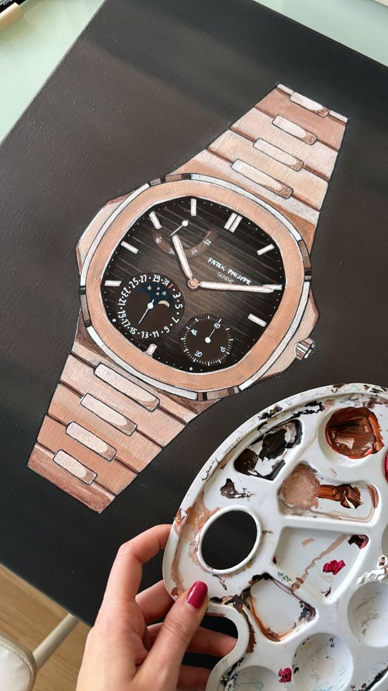
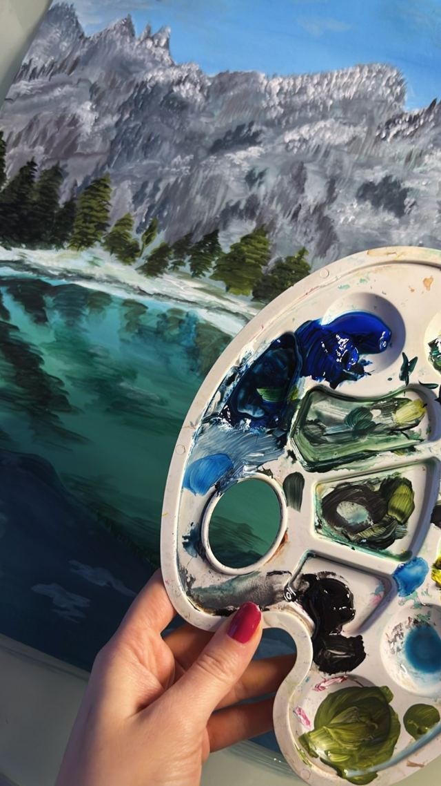
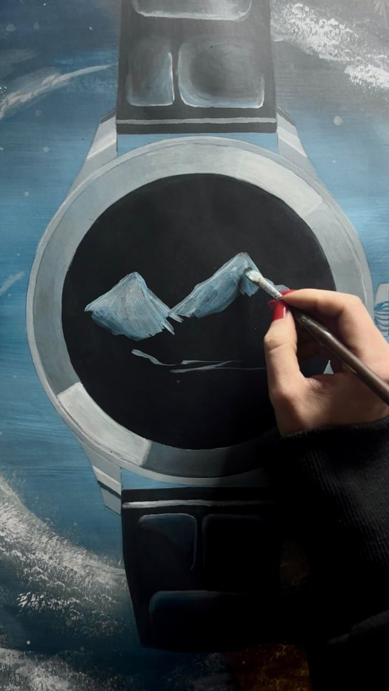
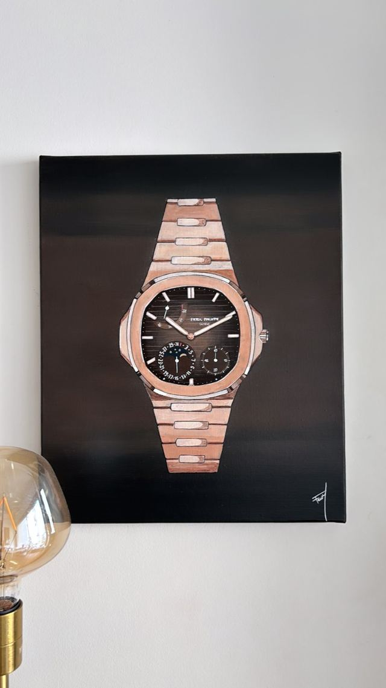
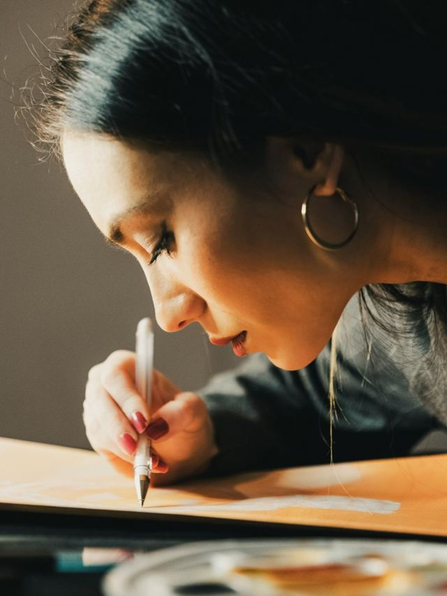
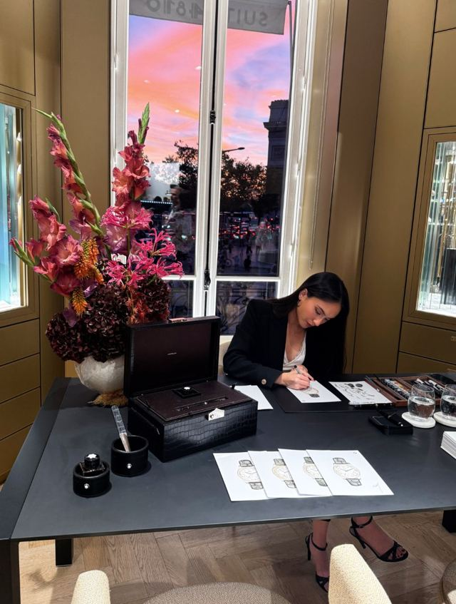
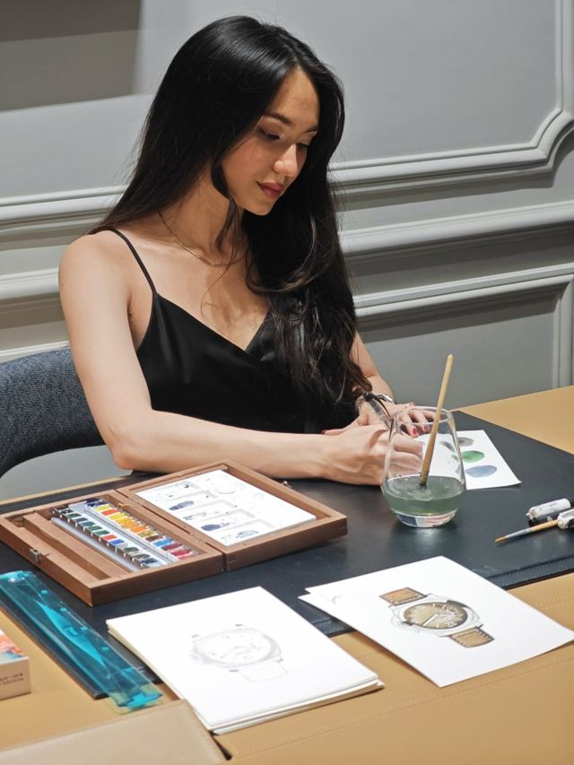
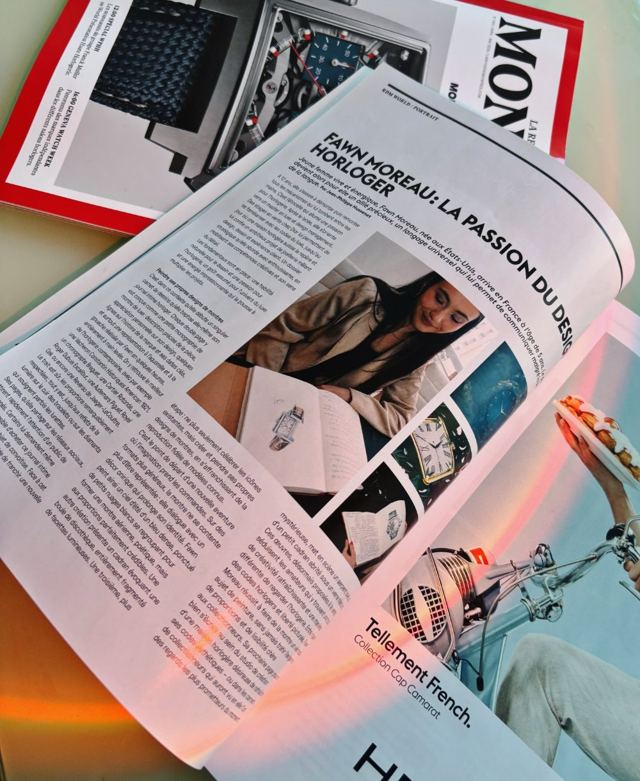
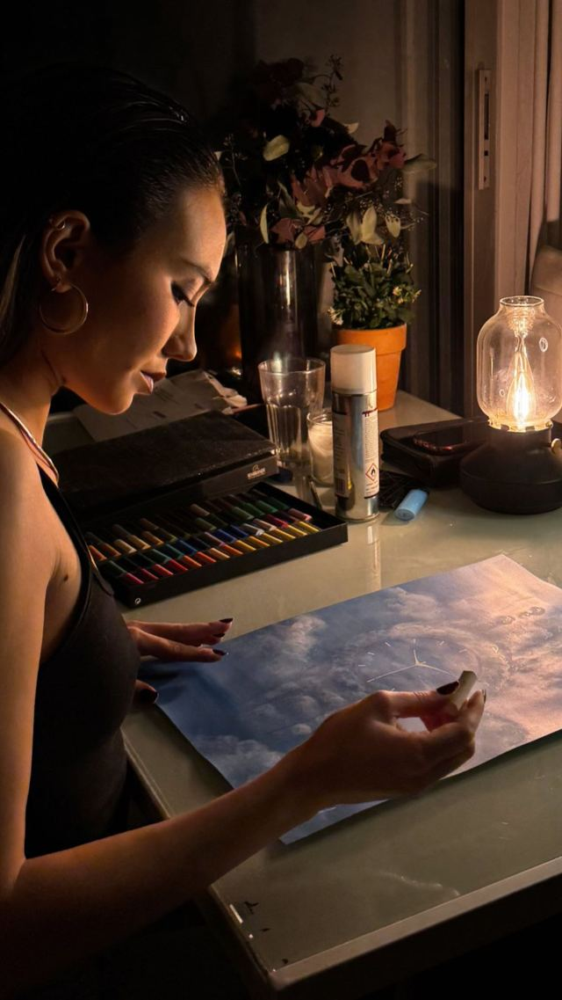

La plupart de mes toiles naissent d'une commande. Une montre héritée, offerte, rêvée : vous me la confiez, j'imagine le monde dans lequel elle vit, et je la peins pour vous.

01
Votre montre
Vous m'envoyez une photo de votre montre et ce qu'elle représente pour vous.

02
Son univers
On choisit ensemble le format, la technique et l'univers : un paysage, une saison, une couleur, un souvenir.

03
L'atelier
Je peins votre pièce à la main, en une à deux semaines. Le règlement se fait avant le début de la création.

04
Chez vous
Votre peinture vous est expédiée quelques jours plus tard. La livraison est comprise.
Je dessine des montres depuis mes 12 ans. Aujourd'hui, je les sors de leur fonction pour les emmener dans des mondes sortis de ma tête.
Collection
Les Quatre Saisons
Quatre montres, quatre saisons. Une collection exposée chez MMC, à Paris.
Aquarelle
Mon carnet
Depuis des années, je remplis un carnet d'aquarelles des montres qui me font rêver. Il n'est pas à vendre, mais c'est là que tout a commencé.
Je peins aussi votre montre à l'aquarelle, sur fond blanc, au format A3.

À propos
Je m'appelle Fawn.
J'ai travaillé plusieurs années dans l'horlogerie à Genève, comme cheffe de projet, avec toujours un carnet à portée de main. Aujourd'hui, je me consacre à la peinture.
Ma démarche : utiliser le dessin comme langage, regarder l'horlogerie autrement, et passer de la reproduction à la création.
J'ai peint en direct pour Montblanc et Panerai, et La Revue des Montres m'a consacré un portrait dans son numéro 280.

Montblanc · peinture en direct

Panerai · aquarelles sur place

La Revue des Montres · n°280

Commande
Parlons de votre montre.
Pour une commande sur mesure ou pour acquérir une œuvre, écrivez-moi directement sur Instagram.